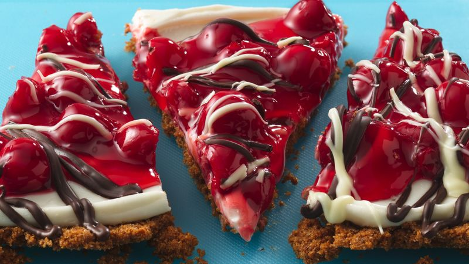

Cherry Cheese Pizza

Ingredients
- 1 Recipe 9-inch Double Crust-Pastry
- 1/3 cup Walnuts, Chopped
- oz Cream Cheese (1 Package) 1/2 cup Sugar
- 2 lg Eggs
- 42 oz Tart Cherry Pie Filling (2-Cans)
Procedure
-
STEP 1
Here is an adaption of the old fashioned pizza. I know that it uses a canned pie filling, but you can also use your own pie filling. The canned is only used for speed. -
STEP 2
2 Roll out the pastry and put on a 16 inch pizza pan. Bake 15 minutes at 350 degrees F. Blend the cream cheese, sugar, eggs, walnuts and vanilla together until well blended. Pour into the pie crust and bake an additional 10 minutes. Cool until cold and top with the cherry pie filling. Top with whipped cream, if desired